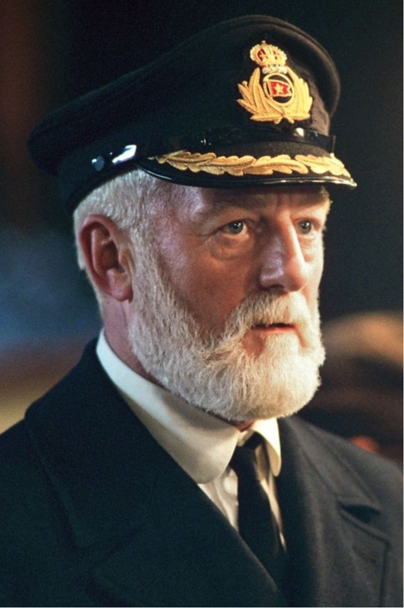

Schauspieler
Interessante Fakten
Bildquellen
Schauspieler
Hauptdarsteller
Leonardo DiCaprio - Jack
Kate Winslet - Rose
Nebendarsteller
Frances Fisher - Rose Mutter
Billy Zane - Verlobter Rose
Victor Garber - Konstrukter
Bernard Hill - Captain
